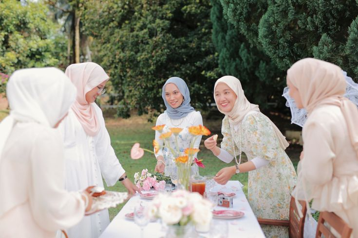

Here are some of my favorite photos:
Dalam setiap tawa dan pelukan, kebersamaan menjadikan setiap momen lebih berarti.
Meskipun kita datang dari latar belakang yang berbeda, memiliki pemikiran, cara pandang, dan kebiasaan yang
tak selalu sama, namun justru dalam perbedaan itulah kita belajar untuk saling menghargai, memahami, dan tumbuh
bersama -karena kebersamaan sejati bukanlah tentang menjadi seragam, melainkan tentang tetap berjalan berdampingan meski tak selalu sejalan.
Waktu terus berjalan tanpa pernah menunggu siapa pun - ia membawa pergi hari-hari, mengganti musim, mengubah
rencana, dan diam-diam menumbuhkan kita lewat pengalaman demi pengalaman; dan meskipun kita tak bisa mmeutar
ulang atau menghentikannya, kita selalu punya kesempatan untuk mengisi setiap detiknya dengan makna, menjadikannya
kenangan yang tak pernah terlupakan.
Dalam setiap langkah menuju impian, selalu ada rintangan yang mencoba menggoyahkan, kegagalan yang membuat kita ingin
menyerah, dan keraguan yang membisikkan untuk berhenti; namun justru di situlah makna sebenarnya dari perjuangan -ketika
kita memilih untuk tetap melangkah, bangkit setelah jatuh, dan terus berusaha meski tak selalu mudah, -karena
keyakinan dan keteguhan hati adalah kunci yang akan membuka pintu keberhasilan di waktu yang tepat.